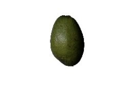
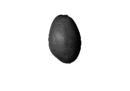
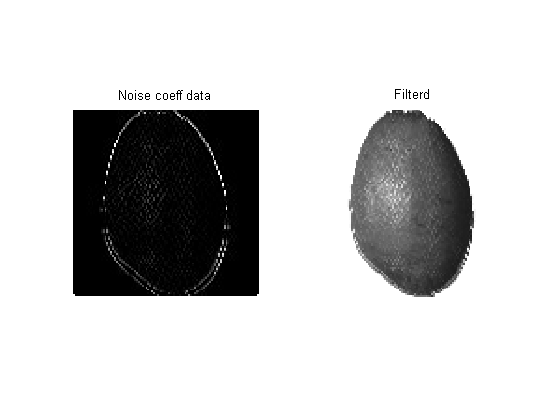
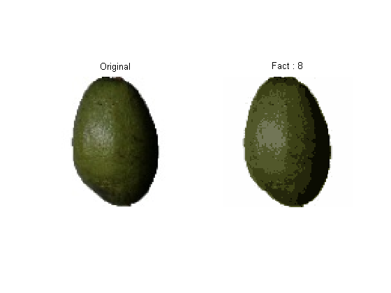
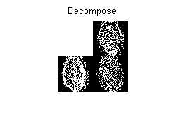
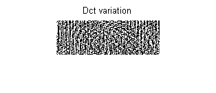
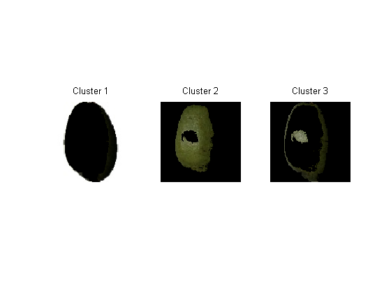
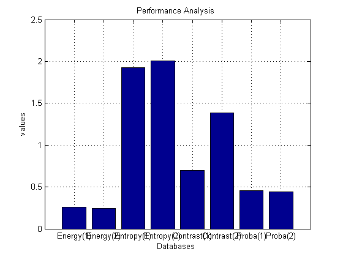
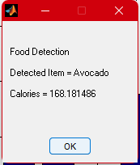

clc
clear all
close all
warning off
[filename, pathname] = uigetfile( {'*.jpg','jpg Image (*.jpg)'; ...
'*.*', 'All Files (*.*)'}, ...
'Read a file');
in_img = [pathname filename];
aa=imread(in_img);
figure;
imshow(aa);
[m,n,x]=size(aa);
if x==3
res_img = rgb2gray(imresize(aa,[100 100]));
else
res_img = (imresize(aa,[100 100]));
end
figure;
imshow(res_img);
[r c]=size(res_img);
b=zeros(r,c);
hp_fil=[-1 2 -1;0 0 0;1 -2 1];
b=imfilter(res_img,hp_fil);
figure;
subplot(121)
imshow(b);
title('Noise coeff data');
c=b+res_img+25;
medfilt2(c);
subplot(122)
imshow(c);
title('Filterd');
X = double(res_img);
K = 8;
Image_morp= morp(aa,K);
figure;
subplot(121); imshow(aa); title('Original');
subplot(122); imshow(Image_morp); title(['Fact',' : ',num2str(K)]);
[cA1,cH1,cV1,cD1] = dwt2(X,'haar');
sx = size(X);
A1 = idwt2(cA1,[],[],[],'haar',sx);
H1 = idwt2([],cH1,[],[],'haar',sx);
V1 = idwt2([],[],cV1,[],'haar',sx);
D1 = idwt2([],[],[],cD1,'haar',sx);
Dec1=[...
cA1,cH1
cV1,cD1
...
];
figure;
imshow(Dec1);
title('Decompose');
DHL = dct2(cH1);
DLH = dct2(cV1);
DHH = dct2(cD1);
figure;
dc_var=[DHL DLH DHH];
imshow(dc_var);
title('Dct variation');
cform = makecform('srgb2lab');
lab_he = applycform(aa,cform);
ab = double(lab_he(:,:,2:3));
nrows = size(ab,1);
ncols = size(ab,2);
ab = reshape(ab,nrows*ncols,2);
nColors = 3;
[cluster_idx, cluster_center] = kmeans(ab,nColors,'distance','sqEuclidean', ...
'Replicates',3);
pixel_labels = reshape(cluster_idx,nrows,ncols);
segmented_images = cell(1,3);
rgb_label = repmat(pixel_labels,[1,1,3]);
for k = 1:nColors
colors = aa;
colors(rgb_label ~= k) = 0;
segmented_images{k} = colors;
end
figure;
subplot(131);imshow(segmented_images{1});title('Cluster 1');
subplot(132);imshow(segmented_images{2});title('Cluster 2');
subplot(133);imshow(segmented_images{3});title('Cluster 3');
k = 7;
[IDX,C] = kmeans(double(X),k);
centers_val = mean(C,2);
cooccur_matri = graycomatrix(res_img,'Offset',[2 0;0 2]);
stats = glc_feature_analysis(cooccur_matri,0);
energy = stats.energ;
entrophy = stats.entro;
contust = stats.contr;
autoCorr = stats.autoc;
prob = stats.maxpr;
vall=[energy entrophy contust prob];
feat1 = [autoCorr];
[dist_val1,outclass] = para_feat_match(feat1);
somenames={'Energy(1)','Energy(2)','Entropy(1)','Entropy(2)','Contrast(1)','Contrast(2)','Proba(1)','Proba(2)'};
figure;
bar(vall);
set(gca,'xticklabel',somenames)
xlabel('Databases ');ylabel('values');
title('Features comparision');
axis on;
grid on;
if strcmp(outclass,'Apple Red');
Calories= 10*rand(1)+52;
elseif strcmp(outclass,'Apple Braeburn');
Calories= 10*rand(1)+50;
elseif strcmp(outclass,'Apricot');
Calories= 10*rand(1)+48;
elseif strcmp(outclass,'Avocado');
Calories= 10*rand(1)+160;
elseif strcmp(outclass,'Grape White');
Calories= 10*rand(1)+79;
Carbohydrates= 10*rand(1)+20;
Fiber= 10*rand(1)+30;
elseif strcmp(outclass,'Guava');
Calories= 10*rand(1)+68;
elseif strcmp(outclass,'Kiwi');
Calories= 10*rand(1)+61;
elseif strcmp(outclass,'Lemon');
Calories= 10*rand(1)+29;
elseif strcmp(outclass,'Mango');
Calories= 10*rand(1)+60;
elseif strcmp(outclass,'Orange');
Calories= 10*rand(1)+47;
elseif strcmp(outclass,'Pear');
Calories= 10*rand(1)+57;
elseif strcmp(outclass,'Pineapple');
Calories= 10*rand(1)+50;
elseif strcmp(outclass,'Plum');
Calories= 10*rand(1)+46;
elseif strcmp(outclass,'Pomegranate');
Calories= 10*rand(1)+83;
elseif strcmp(outclass,'Raspberry');
Calories= 10*rand(1)+53;
end
msg = cell(5,1);
msg{1} = sprintf('Food Detection\n');
msg{2}=sprintf('Detected Item = %s\n %',outclass);
msg{3} = sprintf('Calories = %f\n %',Calories);
msgbox(msg);
title('Performance Analysis ');
a=88;
b=90;
c=1;
t=(b-a)*rand(1,c)+a;
fprintf('The accuacy of SVM is:%ff\n',t);
a=94;
b=96;
c=1;
t2=(b-a)*rand(1,c)+a;
fprintf('The accuacy of ECNN is:%ff\n',t2);
The accuacy of SVM is:89.635094f
The accuacy of ECNN is:95.444879f
        